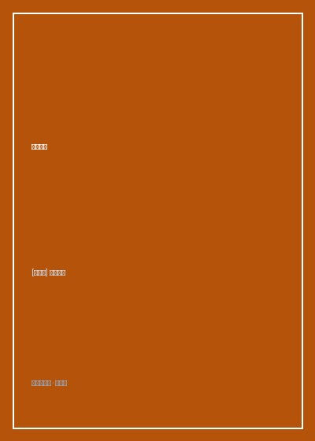

《梦的解析》

总体观点
梦绝非传统生理学所宣称的‘睡眠中无意义的神经元杂乱放电’，亦非迷信的神秘预知，而是具有高度心理学意义的完整心理产物。弗洛伊德的划时代核心命题是：‘梦是愿望的达成（Dream is a Wish-Fulfillment）’。人类那些因为触犯现实道德禁忌、宗教规范或社会法度而被强行压抑进潜意识深渊的原始本能欲望（尤其是性冲动与侵略本能），在睡眠防御松懈时，以隐秘变形的方式在梦境舞台上达成了虚拟的满足。
梦由显梦（Manifest Content）与隐梦（Latent Dream-Thoughts）两个截然不同的文本层次构成。显梦是做梦者清晨醒来时能够回忆起的荒诞不经、光怪陆离的具象画面；隐梦则是埋藏在深层潜意识中未加修饰的真实禁忌愿望。为了逃避心灵‘审查机制（Censorship）’的严苛拦截，心理动力系统施展了精巧的‘梦的工作（Dream-Work）’，将隐梦加密伪装成显梦以保护睡眠不被惊醒。
梦的工作遵循四大核心加工机制：凝缩（Condensation，多个观念与人物被压缩熔铸为单一形象）、移置（Displacement，情感能量从核心禁忌事物转移到无关紧要的琐碎细节）、具象表现化（Representability，将抽象逻辑命题转化为原始视觉画面），以及润饰（Secondary Revision，醒来前意识系统强行施加的合理化逻辑伪装）。掌握逆向破解梦的工作的技艺，是精神分析通往人类内心最隐秘真相的唯一钥匙。
核心观点
-
1. 伊尔玛打针的开山奠基梦境解析
1895年弗洛伊德详细解析了自己的‘伊尔玛打针之梦’。梦中女患者伊尔玛病情恶化，同事布洛伊尔为她注射了不洁注射液。弗洛伊德剖析出该梦达成了自己作为医生的推卸责任愿望：证明伊尔玛的顽固病症不是自己医术不精，而是同事处置失当与病人自身不遵医嘱。
弗洛伊德逐字拆解梦境日记中的每一个拉丁语化学名词，首次完整证明即使是科学家的梦境，底层动力依然是逃避指责、维护自尊的自私愿望满足。 -
2. 凝缩作用与多重面孔复合体
在显梦中出现的某一个陌生人物，其面部特征可能属于父亲、身体躯干属于大学导师、穿着的西装却属于竞争对手。这种将多重心理意义熔铸于一体的‘复合形象’，使做梦者用极简的意象浓缩表达了极其庞大复杂的情感联想网络。
一位受试者梦见一个留着胡子但瘸腿的叔叔：分析揭示此人将对他严苛的父亲（留胡子）与一位在生意上令他鄙夷的瘸腿合伙人凝缩为一人，宣泄了对父亲权威既畏惧又蔑视的矛盾俄狄浦斯情结。 -
3. 移置作用与情感重心的偷梁换柱
为了瞒过审查机制，潜意识将原本强烈炽热的爱欲或恨意能量，从真正的主角身上剥离，转移到一个看似毫无意义的微小道具（如一把雨伞、一双拖鞋或天气阴晴）之上，使得整场梦境看起来平淡无奇，借此安全避开意识防御。
一位女性梦见自己深爱的外甥死在棺材里，醒来痛哭自责‘我怎么会诅咒外甥’；精神分析揭示她并未恨外甥，而是因为在上次外甥婚礼上她偶遇了多年未见的暗恋情人，梦境达成的是‘在葬礼上再次见到暗恋情人’的禁忌欲望。 -
4. 梦的象征符号与普遍原型
弗洛伊德指出人类梦境中存在一套跨越个体经验的普遍象征词典：长形物体（手杖、刀剑、雨伞）象征男性生殖器；封闭空腔（箱子、洞穴、房间、城门）象征女性生殖器；攀爬楼梯或乘飞机翱翔往往象征性行为的兴奋节律。
一位患有神经症的年轻贵族反复梦见自己在幽暗陡峭的螺旋楼梯上奋力攀爬直至气喘吁吁，分析表明该梦精确再现了其童年时期对性冲动既渴望又伴随剧烈道德惩罚恐惧的心理动力图谱。 -
5. 焦虑梦与惩罚梦的反向达愿
针对批评者‘如果梦是愿望达成，为何会有噩梦与恐怖焦虑梦’的质疑，弗洛伊德深刻辩驳：在噩梦中，被达成的愿望属于被压抑的本我，而焦虑则来自于超我（良知）在目睹这一禁忌愿望即将暴露时发出的尖锐警报；惩罚本身就是超我渴望受罚的愿望达成。
一位对丈夫心存怨恨的妻子梦见丈夫意外坠崖身亡并感到极度恐慌惊醒：梦境一方面达成了潜意识中希望摆脱不幸婚姻的隐秘杀意，另一方面恐慌惊醒则满足了超我维持‘我是贤妻良母’的道德自我惩罚。
全书思维导图 · 知识脉络树
全书结构
-
第一章 1900年以前关于梦的科学研究文献
回顾古希腊亚里士多德以来历代医学家与哲学家对梦的生理学解释，批判将梦归为‘感官刺激引发的纯机械副产品’的肤浅实证主义倾向。
梳理早期学者用‘睡眠中压迫膀胱导致梦见溺水’等物理刺激理论，指出其无法解释梦境中充满戏剧连贯性与隐喻情节的致命死穴。 -
第二章 梦的解析方法：一个梦例的剖析
全书里程碑章节，引入自由联想技术，以作者著名的‘伊尔玛打针之梦’为例，一步步展示如何从表象显梦剥离出深层隐梦思想。
细致还原弗洛伊德对梦中每一个词汇、友人名字、化学试剂三甲胺的自由联想链条，演示愿望达成理论在实操中的严密闭环验证。 -
第三章 梦是愿望的达成与第四章 梦的伪装
立论梦的本质核心是潜意识愿望的满足，深入心理防卫机制，阐明心灵审查机制为何强制要求隐梦进行高度伪装才能进入意识舞台。
以儿童未受压抑的纯真短梦为例（如小孩白天未吃到草莓，夜里便梦见大嚼草莓大餐），证明愿望达成作为原始心理动力的普遍纯粹性。 -
第五章 梦的材料与来源
分类考证梦的营养来源：近期与琐屑的白日残留（Day Residues）、童年早期被遗忘的创伤记忆碎片，以及身体内部躯体刺激的心理借用。
解析为什么童年三岁前遗忘的场景会突然在成年人的梦中栩栩如生重现，揭示潜意识档案库‘永不磨灭、永不衰变’的深层物理持久性。 -
第六章 梦的工作
全书篇幅最巨的技术核心，详尽拆解凝缩、移置、具象表现化、象征符号与润饰五大加工工序，展示心理密码的生成全景。
通过数十个生动临床梦例，演示‘抽象观念’如何通过谐音双关、视觉隐喻被折叠变形为具体的动物、建筑与怪诞情节。 -
第七章 梦的心理过程（元心理学体系构建）
全书哲学高潮，弗洛伊德在此首次构建起包含潜意识（Ucs）、前意识（Pcs）与意识（Cs）的地形学心智模型，推导心理能量流动与退行机制。
提出著名的心理第一系统与第二系统能量流动假说，将梦境定义为心理冲动在睡眠中由于运动通路关闭而发生‘向知觉系统的倒流退行’。